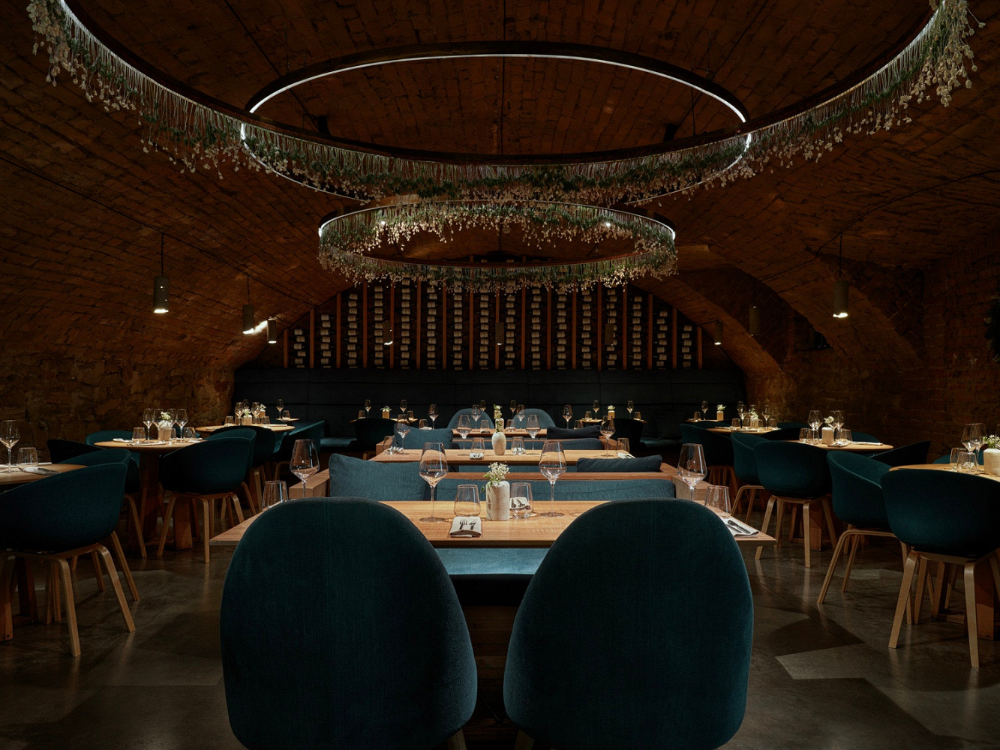

О нашем ресторане

Добро пожаловать в наш ресторан «Супер суп»! Мы гордимся тем, что предлагаем нашим гостям уникальный опыт наслаждения изысканными блюдами и атмосферой уюта. Наша команда шеф-поваров использует только свежие и качественные ингредиенты, чтобы создать настоящие кулинарные шедевры.
Контакты
Мы всегда рады видеть вас в нашем ресторане! Если у вас есть вопросы или вы хотите забронировать столик, свяжитесь с нами по телефону или через форму обратной связи на сайте.
Адрес: ул. какая-то, 52Г, где-тоТелефон: 8 (800) 555-35-35
Email: email@mail.ru